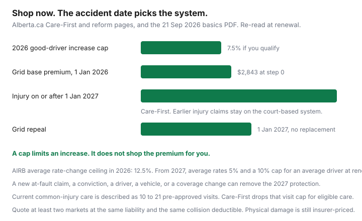

Insurance · Canada
Alberta Auto Insurance Changes Households Should Track: Shopping Checklist Under Reform
Alberta still sells auto insurance through private insurers. A reform headline is not a reason to let the renewal bind itself. Care-First changes how injuries are paid for crashes on or after 1 January 2027. It does not freeze this year’s premium, and it does not choose your collision deductible. This page is the household checklist: keep quoting, re-read accident benefits at each renewal, understand the treatment protocols that shape a claim, know what the grid still does, and re-check the dates because the policy is still being implemented. Manitoba and Saskatchewan public plans are different products. Ontario’s accident-benefit rewrite is a different statute.
Disclosure: Broker quote portals and auto insurance comparison sites are offer types for a second quote at the same liability limit and the same collision and comprehensive deductibles. Saving Optimizer may earn a commission if those links are added later. We do not claim a partnership with any insurer or comparison site. Government figures below were read 24 Sep 2026. Re-read them at renewal. Education only.
Key takeaways
- Shop at least two markets now. Waiting for 1 January 2027 does not lower a premium that renews before then.
- Injury claims from crashes before that date stay on the court-based system. Crashes on or after that date are Care-First. You do not re-buy the policy yourself for the switch.
- Today’s medical and rehabilitation benefit is described as up to $50,000 for two years. Care-First, as Alberta.ca describes it, removes that ceiling for eligible care. Income replacement numbers on the public pages do not all match. Re-read them.
- Common injuries currently sit inside a visit cap the province describes as 10 to 21 pre-approved visits. The AB-1 still has a clock.
- Good-driver increases are capped at 7.5 percent in 2026 if you meet the conviction and claim tests. The cap is not a discount.
- The grid base premium is $2,843 from 1 January 2026. The grid is repealed 1 January 2027 with no replacement announced.
Private-market shopping still applies—do not wait passively for reforms
Alberta.ca’s reform page tells drivers to shop, and it says more than 25 private insurers offer private passenger coverage. Direct compensation for property damage has been in place since 1 January 2022, so a not-at-fault vehicle repair goes to your own insurer. None of that becomes optional because a new injury system is dated.
The useful quote is two or three written totals at the same third-party liability, the same accident-benefit choices, and the same collision and comprehensive deductibles. The broker-versus-direct guide is that method. A comparison site is an offer type for a second number. It is not a reason to drop liability to make the screen look cheaper.
Usage-based programs are legal in Alberta and can set a premium, not only a discount. The telematics guide is the privacy and surcharge question. Ask it before you plug in a device to “wait out” reform.

Accident benefits and care-model headlines: what to re-read on each renewal
The government’s Care-First pages, used 24 Sep 2026, and a Treasury Board and Finance basics sheet dated 21 September 2026, draw the line at the crash, not at the day you bought the policy. An injury from a crash before 1 January 2027 stays on the court-based system. An injury on or after that date is Care-First. Policies are described as moving over with the system. You still read the renewal, because price and physical damage are not frozen.
| Benefit | Court-based system, as described now | Care-First, for a crash on or after 1 Jan 2027 |
|---|---|---|
| Medical and rehabilitation | Up to $50,000 for two years, then a lawsuit if more care is needed and the law allows one. | Alberta.ca describes eligible care without that $50,000, two-year ceiling, for as long as it provides a measurable benefit. |
| Income replacement | The lesser of $600 a week and 80 percent of average gross earnings, for up to two years. | The consumer page says up to $125,000 a year until retirement. The comparison material describes 90 percent of net income up to a gross maximum illustrated at $125,000. The regulation will control. Do not budget from one headline. |
| Common-injury pain and suffering | The Care-First highlights page shows a current maximum of $6,306. The reform comparison table shows $6,061. The cap is indexed. Bulletin 05-2025 is the annual adjustment path. | Pain-and-suffering damages for ordinary injuries are replaced by benefits. A permanent impairment lump sum is described, with a highlight of up to $295,000 and comparison figures up to $298,520. |
| Right to sue | A not-at-fault driver can sue in most cases, with a narrow minor-injury limit. | Alberta.ca says a lawsuit remains if the at-fault driver is found guilty of listed serious offences, including dangerous operation, impaired driving, or fleeing police. |
At each renewal before and after the date, ask the insurer to point at the accident-benefit limit on your declarations and to say which system applies to a crash this term. Keep that page. A verbal “you’ll be switched” is not a file.
Diagnostic and treatment protocols that affect claim experience
The speed of care is a claims rule, not a premium rule. Alberta’s Diagnostic and Treatment Protocols Regulation is how sprains, strains, and whiplash-associated disorders are supposed to start treatment without a long approval wait. The province’s reform table says common-injury treatment today is up to 21 pre-approved physiotherapy or chiropractic visits. The Care-First highlights page says the current system is limited to 10 to 21 visits depending on severity, and that Care-First pays treatment as long as it supports recovery.
The collision checklist already records the paperwork clock: the province’s April 2024 interpretive guide tells people with a protocol injury to submit the AB-1 within 10 business days so the protocol can be used. The regulation’s outside date is 30 days, or as soon as practicable if that is not reasonable. Missing the early window is how a straightforward sprain becomes an argument. Care-First may change the visit cap. It does not make today’s AB-1 optional for a crash that happens this month.
Section B of the Standard Automobile Policy is the accident-benefit contract you hold now. Health-care providers bill inside the protocol or outside it. You do not need to memorize fee codes. You do need to tell the insurer the date of the crash, complete the form, and keep the treatment receipts. A diagnostic protocol is not collision coverage. Hail and a parking-lot dent are still comprehensive and collision, with your deductible.
Keep quoting multiple markets; reform does not freeze your rate
The 2026 good-driver cap is 7.5 percent. Alberta.ca splits that into a 5 percent cap plus a 2.5 percent rider for disaster costs such as the 2025 hail in Calgary and Brooks. You qualify only if you have none of the following: an at-fault accident in six years, a Criminal Code traffic conviction in four years, a major conviction in three years, or a minor conviction in three years. The Rate Board cannot approve an insurer’s average rate change above 12.5 percent, up from 10 percent. An average cap is not your personal cap. A driver who fails the good-driver test can see a larger move.
From 1 January 2027 the province describes a different cap: insurers may not raise average rates by more than 5 percent, and an average driver is capped at 10 percent at renewal. You can lose that protection with a new at-fault accident, a new conviction, adding a driver, changing vehicles, or adjusting coverage. Eligibility is judged on the renewal date. Changing the deductible to chase a quote can be the act that removes the cap. Know that before you sign.
A cap is a ceiling on an increase at the insurer you already use. Another insurer can still be cheaper at the same cover. Quote them. If you move, bind the new policy with no bare day, the same rule as the loyalty guide. Premium payment plans have been required since the Superintendent’s 2023 bulletin and were written into regulation, so an annual bill is not the only way to pay. A payment plan is not a lower rate.
Young driver and grid/risk-sharing context at a consumer level
The grid is a maximum on basic coverage: bodily injury and property-damage liability, and accident benefits. The insurer must charge the lesser of its own rate and the grid rate in most cases. Direct compensation and optional collision are not that ceiling. The Automobile Insurance Rate Board’s grid guidance sets the base premium at step 0 at $2,843 from 1 January 2026, after $2,369 in 2025. The grid premium for a private passenger vehicle uses the relevant driver plus 25 percent of an occasional driver’s grid premium. Convictions and at-fault claims move the step. Insurers may charge the grid rate rather than a lower rate in listed cases, including three or more at-fault claims in six years and stated conviction counts.
On 21 November 2024 the government said the grid would be repealed effective 1 January 2027, with no replacement. Until that date, a young driver’s basic premium is still tested against the grid. After that date, the insurer’s filing is the price, inside whatever rate cap still applies. The young-driver guide is how a household assigns the real car and lists the real driver. Hiding a new driver to stay inside a cap is misrepresentation, and adding the driver can itself change 2027 cap protection. Price the honest list.
Risk-sharing, in consumer language, is the cap and the grid together: a ceiling so one insurer’s appetite does not become an unlimited bill for a clean driver, and a floor of honesty so a record with claims does not borrow a clean driver’s price. It is not a provincial rebate you apply for.
Re-verify Care-First / reform effective dates at draft—policy is moving
Dates checked for this page on 24 Sep 2026:
- Care-First starts 1 January 2027 for injuries in accidents on or after that day. Earlier injury accidents stay on the court-based system. Source: Alberta Treasury Board and Finance, Care-First basics, dated 21 September 2026, and alberta.ca.
- Grid repeal: 1 January 2027, no replacement. Source: the Rate Board’s grid page, citing the 21 November 2024 announcement.
- Good-driver cap: 7.5 percent in 2026, with the conviction tests above. Adjusted cap from 2027: 5 percent on average rates and 10 percent for an average driver at renewal, lost if the risk changes.
- Bill 47, the Automobile Insurance Act, was proposed in March 2025 to build the framework. Implementation detail can still move. If a commencement date on alberta.ca changes, the commencement date wins and this paragraph is stale.
The renewal habit is the annual review, 45 days out: liability limit, deductibles, listed drivers, kilometres, and a second quote. Reform is a reason to read the accident-benefit paragraph twice. It is not a reason to skip the quote.
Sources & date stamps
- Government of Alberta, Care-First auto insurance and automobile insurance reform — 1 January 2027 start; benefit comparisons; 7.5 percent and 2027 caps; shop the private market. Used 24 Sep 2026.
- Treasury Board and Finance, Care-First basics PDF dated 21 September 2026 — accident date, not purchase date, chooses the system.
- Automobile Insurance Rate Board, grid rating system and Grid Guidance — base premium $2,843 from 1 January 2026; repeal 1 January 2027 with no replacement. Used 24 Sep 2026.
- Diagnostic and Treatment Protocols Regulation and the Superintendent’s 10 April 2024 interpretive guideline — early treatment for protocol injuries. The collision checklist carries the AB-1 timing.
- Dollar figures on the two Alberta.ca tables do not all match. Re-read the live pages before you rely on $6,061, $6,306, $295,000, or $298,520.
Frequently asked questions
Should I stop shopping until Care-First starts?
No. Alberta remains a private market with many insurers. Care-First, on the Government of Alberta pages used 24 Sep 2026, starts 1 January 2027 and applies to injuries from accidents on or after that date. Your premium can still change at renewal. A cap limits an increase for drivers who qualify. It does not compare insurers for you.
Which claims use Care-First?
The government’s 21 September 2026 basics sheet says accidents with an injury on or after 1 January 2027 are handled under Care-First, and earlier injury accidents stay on the court-based system. The policy does not need to be replaced by you for that switch. Physical damage is still your policy’s collision and comprehensive.
What is the grid, and when does it end?
The Automobile Insurance Rate Board’s grid is a ceiling on basic coverage: third-party liability and accident benefits, with the insurer charging the lesser of its rate and the grid rate in most cases. The grid base premium is $2,843 at step 0 from 1 January 2026. The Board says the grid is repealed effective 1 January 2027, with no replacement.
What rate cap applies in 2026?
Alberta.ca says good drivers are capped at a 7.5 percent increase in 2026 if they have no at-fault accident in six years, no criminal-code traffic conviction in four years, and no major or minor conviction in three years. The Rate Board is limited to an average rate change of 12.5 percent. A 2027 cap is different, and a new claim, driver, vehicle, or coverage change can remove it.
Is this brokerage advice?
No. Education only. Broker quote portals and auto insurance comparison sites are offer types for a second quote at the same liability and the same physical-damage deductible. We do not claim a partnership with any insurer.